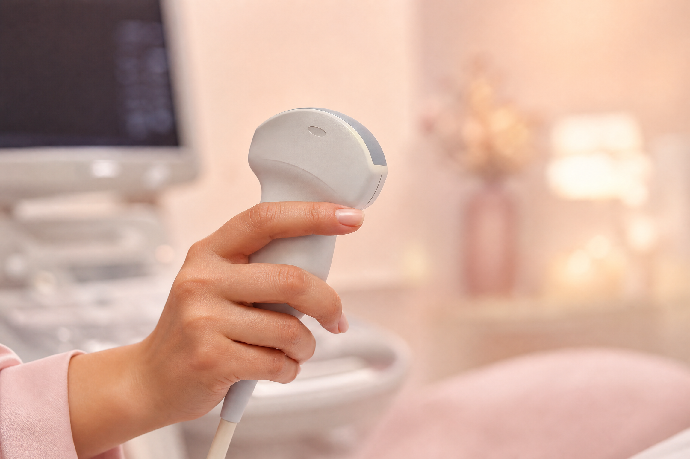
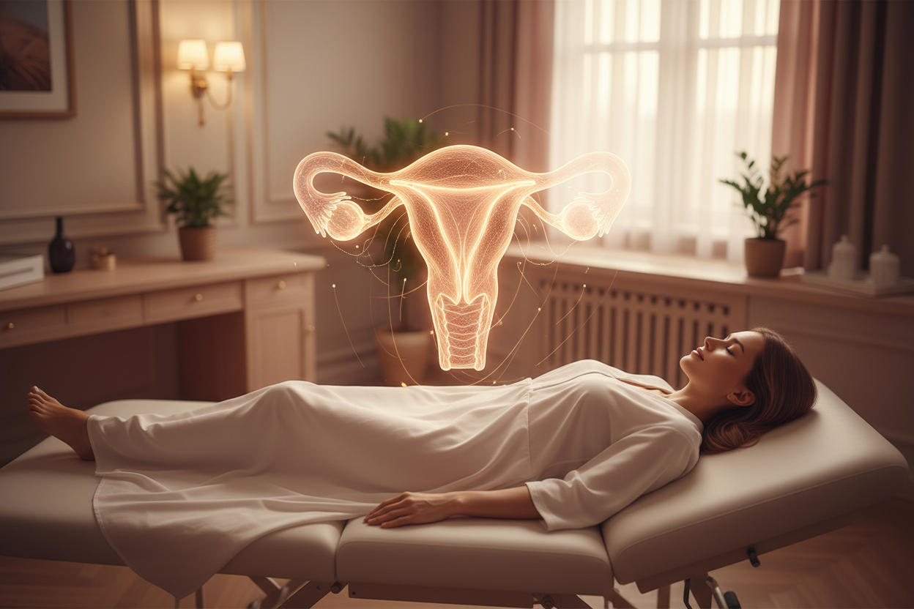

Ecografía 3D y Doppler Pélvico

La ecografía 3D y el Doppler pélvico representan el estándar de oro en el diagnóstico por imagen en ginecología. Esta evaluación especializada permite obtener una reconstrucción volumétrica exacta de los órganos pélvicos y analizar su flujo sanguíneo en tiempo real.
A diferencia del ultrasonido convencional 2D, la tecnología 3D permite visualizar el plano coronal del útero. Esta perspectiva es imposible de obtener en 2D y es fundamental para observar simultáneamente la forma real de la cavidad uterina y el contorno externo del útero, brindando un nivel de precisión diagnóstica comparable a la resonancia magnética.
¿Qué evalúa este estudio?
Al combinar la reconstrucción 3D con el Doppler Color y Power Doppler, se logra un mapa completo de la anatomía y la vascularización pélvica, permitiendo detectar patrones anormales asociados a diversas patologías.
| Estructura evaluada | Lo que se detecta con precisión |
|---|---|
| Útero (cavidad y contorno) | Malformaciones congénitas (útero septo, bicorne, unicorne), miomas submucosos vs. intramurales, adenomiosis, pólipos endometriales. |
| Ovarios | Endometriomas, quistes simples vs. complejos. Diferenciación entre lesiones benignas y malignas mediante análisis vascular. |
| Dispositivo Intrauterino (DIU) | Posición exacta dentro de la cavidad uterina en tres dimensiones. Detección de desplazamientos, incrustaciones o perforaciones. |
| Flujo uterino y ovárico | Vascularización anormal, índices de resistencia (RI) y pulsatilidad (PI) relacionados con fertilidad, implantación y sospecha de malignidad. |
¿Cuándo está indicado este estudio?
- Dolor pélvico crónico o dismenorrea (cólicos) severa.
- Sospecha de malformación uterina por infertilidad o abortos de repetición.
- Evaluación detallada de miomas: tamaño exacto, número y relación precisa con la cavidad uterina antes de una cirugía.
- Diagnóstico diferencial de masas ováricas (benigno vs. maligno).
- Sospecha clínica de adenomiosis.
- Verificación de la posición de un DIU que no se visualiza correctamente en 2D.
- Evaluación de la receptividad endometrial en tratamientos de fertilidad.

Ventajas frente al ultrasonido convencional
- Plano coronal del útero: Muestra la anatomía uterina completa. Es la única forma ecográfica de diagnosticar correctamente un útero septo o bicorne.
- Alta sensibilidad: Su precisión diagnóstica es cercana al 100% para malformaciones uterinas, equiparable a una resonancia magnética pero de forma más rápida y accesible.
- Power Doppler: Detecta vasos sanguíneos muy pequeños y flujos lentos que el Doppler color tradicional no alcanza a captar, crucial para evaluar tumores ováricos.
- Análisis offline: El volumen 3D se captura en segundos y se guarda digitalmente. Esto permite a la doctora "navegar" por el útero en cualquier plano después de que la paciente se haya ido, sin necesidad de repetir el estudio.
Si presentas síntomas ginecológicos complejos o necesitas una segunda opinión precisa antes de un procedimiento quirúrgico, la ecografía 3D con Doppler pélvico es la herramienta diagnóstica definitiva para guiar tu tratamiento.
Preguntas Frecuentes
Respuestas sobre la ecografía 3D y el Doppler pélvico
La ecografía 3D permite obtener el plano coronal del útero, algo imposible en 2D. Esto muestra la forma real de la cavidad y el contorno externo simultáneamente, lo que es vital para detectar malformaciones uterinas con una precisión cercana al 100%.
El Power Doppler es una herramienta clave para diferenciar entre masas benignas (como endometriomas o quistes simples) y lesiones sospechosas de malignidad, ya que detecta patrones anormales de vascularización asociados al crecimiento tumoral.
Sí, de hecho la ecografía 3D es el estándar de oro para verificar la posición exacta del Dispositivo Intrauterino (DIU), detectando si está mal posicionado, incrustado en el miometrio o desplazado.
Se realiza vía transvaginal. Solo se requiere tener la vejiga semillena (tomar medio litro de agua 30 minutos antes del estudio). No es necesario estar en ayuno.
El procedimiento dura aproximadamente entre 30 y 45 minutos. La captura volumétrica se realiza en segundos, pero el análisis detallado de los flujos y la reconstrucción 3D toman la mayor parte del tiempo.